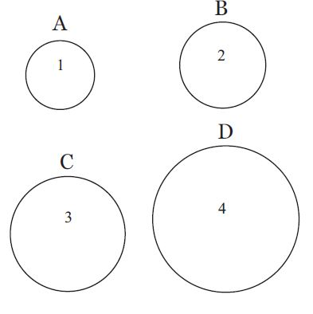
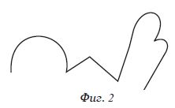

Беседа 1130 от 3877 · Беинса Дуно
Четирите кръга
„Бог царува на небето. Бог царува в живота. Да бъде благословено името Му!”
Размишление.
Колкото високо да е минарето, ходжата все една и съща молитва чете.
Сега, ще начертая четири кръга с различни големини. Защо тия четири кръга А, В, С и Д, или 1, 2, 3 и 4 са различно големи, а при това постепенно се увеличават?

Често ние говорим за любовта и казваме, че всички неща имат любов. Например, водите, изворите, ветровете, въздухът, огънат, минералите, растенията, животните и хората имат любов помежду си. Два извора се обичат, както двама души се обичат; два скъпоценни камъка се обичат, както двама души се обичат. Някой казва, че разбира любовта. Щом разбира любовта, нека ми каже нещо за любовта на скъпоценните камъни. Вие казвате, че Бог е Любов, но тази любов е неразбрана за вас. И най-видните философи в света не разбират, какво нещо е Божията Любов. От осем хиляди години насам Любовта Божия е останала неразбрана и за адепти, и за светии, даже и за ангели. Всички хора говорят за Божията Любов, а като се натъкнат на някаква малка мъчнотия, веднага се смущават; ако ги заболи пръст, стомах, или изгубят парите си, те веднага забравят всичко. Уволнят някого от служба, или заболее дъщеря му, той казва: Като ме назначат отново на служба, или като оздравее дъщеря ми, тогава ще мисля за Божията Любов. Сега нищо не ми е пред очите. - Който разбира Божията Любов, той болен не може да бъде, нито богатството си може да изгуби, нито от служба могат да го уволнят. Който разбира Бога, той няма да пита, какво нещо е Бог, дали ни обича, или не. Външно Бог не проявява любовта си към хората. Също така и външната любов на хората не отива до Бога. Някой се моли на Бога, чете две-три молитви, но молитвите отиват едва две педи над главата му. Това не е истинска молитва.
Сега, ще обясня тази мисъл със следния пример. Един млад, образован човек, свършил университет, но нийде не може да намери служба; отива при един богат банкер, да иска работа от него, или пък да му услужи временно с някаква сума. Банкерът го поглежда строго и му казва: Господине, нямам работа за вас, пък и с пари не мога да ви услужа. След малко, при същия банкер дохожда млада, красива мома, която е свършила едва трети прогимназиален клас и поисква от него известна сума. Банкерът поглежда приветливо момата, изважда един чек и го подписва. Без да я пита, защо й са тези пари, той веднага дава исканата сума. Питам: как ще си обясните това нещо ? Казвате, че науката е сила, а в случая, младият господин, който учил цели 16 години, нямал сила да извади пари от банкера. Красивата мома, която е свършила само три класа, можа да извади пари от касата на банкера. Значи, красивата мома крие в себе си някаква особена, вътрешна сила, която влияе на душите на хората. Тази сила не е нито в лицето, нито в погледа на красивата мома, но се крие някъде дълбоко в нея и несъзнателно я проявява. Когато красивата мома влезе в кантората на банкера, още при влизането й, той застава прав пред нея, като войник пред своя генерал, и казва: Заповядайте! Какво обичате? Може ли войникът да не изпълни волята на генерала си? Значи, в случая, образованият човек, с висша наука, е посредствен човек, т.е. голямо шише, с малко съдържание. Красивата мома е генералът, който има сила да издава заповеди. Тя е малко шише, но пълно със съдържание. Такова нещо представлява човешката глава: голямо или малко шише, с малко или с много съдържание.
Съвременните хора говорят за човешкия мозък, за силата, която се крие в него. Всички хора имат мозъци, но тия мозъци се различават по динамическата сила в тях, както и по количеството на мозъчното вещество. Биолозите са правили изследвания на мозъчните клетки на гениални и на обикновени хора и са намерили голяма разлика между едните и другите. Също така има различие и в погледа на хората, в строежа на цялото им тяло. Красивата мома, която може да застави банкера щедро да отвори касата си, има особен израз на очите си, особен строеж на цялото тяло. Добрите хора са необикновени и всеки ги слуша. На обикновените хора никой не обръща внимание. Който е необикновен, той трябва да разполага с необикновена сила. Обикновеният човек се моли на Бога, но сам не вярва в силата на своята молитва, а при това очаква да получи отговор, да бъде молитвата му чута. С това не искам да кажа, че сегашните хора нямат вяра; хората имат вяра, но в съзнанието им има малки пропуквания, отдето част от енергията им изтича навън. Вследствие на това изтичане на енергията, човек се демагнетизира. Това показва, че силата на човека може да изтича така, както изтича водата от шишетата.
Сега, ще се върна към четирите кръга. Еднакви сили ли са образували тия кръгове? Силите, които са образували тия кръгове, са различни. Даже и при начертаването на тия кръгове е употребено различно количество енергия. Не е лесно човек да начертае един кръг. Защо не е лесно? Защото, при начертаването на кръга, човек трябва да измени положението и състоянието си, да мине в нова област, в нов свят. Кръгът представя свят, съвършено различен от физическия. Значи, силата, която тече през ръката на човека, за да начертае кръг, е особена. Тя не се получава лесно. За да се добие, човек трябва да се свърже със съответни сили в природата, и така да ги проектира навън. Когато поетът и писателят пишат хубави неща, това се дължи на енергията, която изтича от тях. Всеки може да пише, но за да съчетае буквите, слоговете, думите, мислите така, че да изразяват нещо хубаво, нещо разумно, човек трябва да съгласи своята енергия с тази на разумната природа. Само разумната природа е в сила да подтикне човека към великото, към възвишеното в живота. Какво ще напише, или какво ще направи човек, това зависи от количеството на енергията, която разумната природа дава всеки ден. Човек не се ражда разумен. Той има в себе си условия да бъде, или да не бъде разумен, но природата всеки ден му дава известно количество разумна енергия, която той може да използва правилно, а може и да не я използва, както трябва. От него зависи какво ще направи с тази енергия. Който не разбира силата на тази енергия, той казва: Какво ме ползва тази енергия? Щом каже така, енергията се разпръсва.
Така постъпва всеки, който не разбира законите. Той начертава един кръг, погледне го с пренебрежение и казва: Какво има в този кръг? Който разбира силата на кръга, той ще го използва за лекуване: например, ще начертае този кръг около брадавицата на своя пръст, ще отдалечи ръката си и след половин час най-много брадавицата ще изчезне. Имате цирей на врата си. Начертайте около цирея един кръг и концентрирайте мисълта си върху цирея. Силите на кръга ще започнат да действат върху цирея, и след известно време циреят ще се пробие и изчезне. По този начин вие ще опитате силата на вашата мисъл, силата на вашата вяра. Ако казвате, че имате вяра, а не можете да лекувате най-малките болести, вярата ви не е силна. Тя е в зародиш само. Имате някаква малка пъпчица на ръката си. Направете опит да я махнете със силата на вашата мисъл, със силата на вашата воля. Направете един малък кръг около пъпчицата си и концентрирайте мисълта си към нея. Ако пъпчицата не се махне, направете втори, по-голям кръг. Ако не успеете, направете трети, четвърти кръгове, по-големи от първите. Ако и при това положение не успеете, причината е или в мислите, или в чувствата, или във волята ви. Потърсете причината и я отстранете. Понякога причината може да се крие и в окръжаващата среда. На другия ден повторете опита. Докато не махнете пъпчицата от ръката си, не се отказвайте от този опит. Така ще усилите волята си, така ще усилите мисълта и вярата си. Някой има затвърдяване на ставите си. Нека направи същия опит, да види силата си.
Казвате: Кой ще си играе с такива опити? Питам ако лекарят ви даде някаква мас, да се мажете, това не е ли пак игра? За предпочитане е да направите един кръг около болното място на организма си, отколкото да се мажете с различни масти. Правете опити и не се страхувайте. Ако носът ви боли и направите на болното място един кръг, и се случи, че болката се усили, вместо да се намали, това е добър признак. Продължавайте опита без страх. С това се изпитва и вярата ви. Колкото и да се увеличава болката, продължавайте опита. Някой започва да се лекува, и като дойде до четвъртия ден, до четвъртия кръг, уплашва се и спира. Не, щом е дошъл до това място, нека продължава. На четвъртия ден положението ще се подобри. Правете тези упражнения, да се развивате. Добре е понякога да се лекувате едни-други. Някоя сестра ще се заеме да лекува друга; братът пък ще лекува друг брат. Така ще изпитвате силите си и взаимно ще си помагате. Вярата не може да се реализира, докато човек не приложи съответна на нея сила. За това пък се изискват опити.
Мнозина мислят, че ако не могат сега да направят нещо, ще постигнат това в друг живот, като се родят отново, като млади, способни за работа. Не, каквито сте сега, такива ще бъдете и в друг живот. Ако сега не работите, ако сега не правите усилия, и в другия си живот ще бъдете същите. За хора, които не спазват Божиите закони и не работят, и природата е еднообразна. В какво седи това еднообразие? В смъртта. Еднообразието носи смърт, а разнообразието – живот. Някой се оплаква, че не може да събере двата края на нещата. Питам: как се събират две неща на едно място? Какъв процес е събирането: колективен, или единичен? Събирането е колективен процес. На физическия свят, събирането е механически, несъзнателен процес. Събират се само такива неща, на които съзнанието не е пробудено. Умножението, обаче, е духовен процес. То е процес, в който взимат участие същества, с пробудено съзнание. Следователно, неразумните неща се събират, а разумните се умножават. Изваждането е също така физически процес. Когато изучаваме биологически развитието на клетките, виждаме, че те се размножават чрез деление. Това деление е разумен, съзнателен процес. И сега, като знаете тия неща, вие можете да употребявате събирането и изваждането за лекуване на един род болести, а умножението и делението за лекуване на друг род болести. Също така, известни сили в нашия организъм могат да се събудят по законите на събирането и изваждането, а други – по законите на умножението и делението.
Сега, като говоря за събирането, имам предвид приложението на това действие навсякъде в живота. Например, то има приложение и във физическото развитие на човека. За да се развие физически, човек прибягва до разни методи и системи. Някои системи препоръчват всеки ден да се вдигат топки от различни тежести: започват от един килограм и постепенно увеличават, като достигат до 50 и повече килограма. И наистина, в продължение на няколко месеца, човек може така да развие мускулите си, че да вдига големи тежести. Значи, за да развива мускулите си, човек требва да прави упражнения, които да му указват известно съпротивление. Без съпротивление, мускулната система на човека не може да се развива. Без съпротивление ръцете му винаги ще останат слаби, пасивни.
Същият закон се отнася и до развиването на човешката мисъл. Казвате: Защо са мъчнотиите и страданията в живота? Без мъчнотии и страдания, човек ще мяза на морска гъба, или на морска медуза. Значи, мъчнотиите и страданията са съпротивление, което развива човешката мисъл. Без съпротивления мисълта не може да се развива. Който иска да стане разумен, той трябва да има мъчнотии, страдания. Методът на Д-р Мюлер, който препоръчва дигане на тежести за физическо усилване на мускулите, има приложение и по отношение умственото развитие на човека. Днес ще дигнеш умствено един килограм тежест; утре – два килограма; на третия ден – три, и така, постепенно ще увеличаваш, докато дойдеш до положение да дигаш тежести по-големи и от физическите. По същия начин идат и мъчнотиите на човека: днес мъчнотията му тежи един килограм, утре – два килограма, после – три килограма и т. н. С усилие, с постоянство той ще дига мъчнотиите една след друга, докато един ден се засили умствено и стане велик човек. Велик ще бъде, защото ще може лесно да се справя със своите мъчнотии и страдания.
И тъй, когато пожелаете да реализирате една своя мисъл, разумната природа непременно ще ви постави някакво препятствие, някакво съпротивление. Тя казва: Вие ще реализирате своята мисъл, само ако можете да преодолеете препятствието, което е поставено на нейния път. Забележете, когато човек пожелае да направи едно добро, веднага ще се изпречат на пътя му ред препятствия. Ако е слаб, той ще отстъпи, ще се откаже от доброто, което е намислил и ще се оправдава, че се явили пречки, нещастия, които му отнели възможността да направи доброто. В това, именно, седи красотата на живота. Спънките, противодействията са сили, които застават на пътя на човешките мисли, чувства и желания и го карат да се бори с тях, да ги преодолява, а с това заедно и да се развива. Който успее да преодолее тия спънки, той ще може да използва тяхните сили за реализиране на мислите, чувствата и желанията си. И затова, знайте, че всяко противодействие е сила, която можете да използвате за вашето растене и повдигане.
Ще ви приведа един пример за изяснение ролята на отрицателните мисли, които понякога нападат човека. В топлите страни, а също така и в България, има особен род оси, които правят жилищата си от кал. Те хващат 10-20 паяци, надупчват телата им и ги поставят в жилището си, дето са техните личинки. След време, като се развият личинките им и превърнат в оси, те намират вече готова храна. Следователно, паяците, в случая лошите мисли, служат за храна на малките оси. Добрите мисли са семенцата, зрънцата, които се посаждат в земята. Лошите, отрицателните мисли са тор, от който ще се ползват добрите мисли. Като проследите този закон, ще видите, че той е верен при всички случаи на живота. Добрите мисли се хранят от лошите. Ако около една добра мисъл няма няколко лоши, които да й послужат за храна, тя не може да се реализира. Права ли е тази теория? Права е. За вас може да е теория, но за мене е природен закон. Щом е природен закон, той е реалност. Ще кажете, че това е игра на природата. Не, природата никога не си играе; тя се занимава, тя работи.
Тъй щото, на каквито противоречия да се натъквате, радвайте се. Тези противоречия са условия за вашето развитие. Колкото по-големи са противоречията, толкова по-големи са възможностите ви да станете гениални, велики, добри хора. Казано е в Писанието : „Дето грехът се увеличава, там и благодатта расте". Значи, грехът е условие да се увеличава благодатта. Може ли човек да живее на земята, без да се оцапа? Щом е дошъл на земята, той непременно ще се оцапа, но важното е, че природата дава методи за чистене. Нечистотиите не могат да се задържат на тялото, но в самия човек трябва да има желание всеки момент да се чисти. Възгледите на съвременните хора са толкова ограничени, че от най-малката мъчнотия, която иде за тяхното развитие, те се обезърчават и казват: Не струва да се живее! Тогава, какво остава на човека? От гениален човек, какъвто е определен да стане, ще слезе в положението на обикновен човек, т. е. ще деградира. Такъв е законът в природата. Който не използва добрите, благоприятните условия на живота за своето развитие, той ще слезе в по-низко положение. Който не желае доброволно, по закона на жертвата да даде това, което Бог изисква от него, той пак ще го даде, но вече чрез насилие. Когато слезе в положението на обикновен човек, той ще даде десет пъти повече, отколкото като гениален. В този смисъл, гениалният дава по-малко, а обикновеният – повече. Казвате: Да живеем добре! – Само разумният човек, който разбира законите на живота и на природата, може да живее добре. Но докато дойде до това положение, човек ще мине през различни състояния, през разни фази на живота. Той ще скърби и ще се радва, ще плаче и ще се смее. Например, след плача иде успокояването; след успокояването – смеха, а след смеха – заспиването.
Сега, да се върнем пак към кръговете. Защо кръгът „А” е най-малък? Случайно ли е начертан най-малък, или има някаква причина за това? Този кръг се среща и в природата и символизира нещо. Той е форма, която изразява нещо живо. Сравнете, например, кръга около окото на бивола с кръга около окото на мухата. Какво забелязвате? Между окото на бивола и това на мухата има голяма разлика, не само по форма и големина, но и по строеж. Ако наблюдавате окото на някое млекопитаещо и това на човека, пак ще намерите грамадна разлика и по форма, и по големина, и по строеж. Колкото е по-голяма зеницата на окото на дадено животно, толкова по-малка е светлината на неговото съзнание. Щом зеницата се намалява, светлината на съзнанието се увеличава. Същото може да се каже и за хората: колкото по-интелигентен е човек, толкова и зеницата му е по-малка. И обратно: колкото по-неинтелигентен е човек, толкова и зеницата му е по-голяма. Тъй щото, намаляването на кръга перспективно показва усилване, увеличаване на нещо. Щом знаете това, ще кажете, че за четвъртия кръг е платено повече, в смисъл, че повече енергия е изразходвана. Обаче, ако тази големина се отнася до зеницата на някое око, този кръг има по-малко цена. Ако окото на някой човек по големина отговаря на четвъртия кръг, този човек е в категорията на по-низко културните, по-низко интелигентните хора, защото няма достатъчно светлина в съзнанието си, която да помага за неговото развиване. Той живее в гъста среда, вследствие на което няма условия да се проявява. Например, някой иска да бъде умен, но условия няма за това. Ето, и животните са в същата среда, в която и хората живеят, но нямат условия да се проявят. Има ред причини, които ограничават тяхната природа.
Сега, ще ви наведа на друга аналогия. Когато през ума ви мине някаква малка мисъл, вие сте недоволни от нея и казвате: Защо ми е тази малка идея? Според мене, малките мисли, малките идеи са човешки, а големите мисли и идеи спадат към животинското царство. И наистина, колкото по-нагоре се качва човек, в ангелските светове, толкова по-добре разбира, де се крие силата на идеите. Там идеите са по-малки от физическите, от идеите на хората. Ангелските идеи са по-малки, но по- силни, по-интензивни. Защо са по-силни? Защото малките идеи проникват навсякъде. Представете си, че един виден поет взима вашия албум и пише: Светлината е всичко. След това дойде един милиардер, взима албума ви и пише: Подарявам два милиона долара на своя добър приятел. Коя мисъл е по-силна: на поета, или тази на милиардера? По големината на кръговете вие ще познаете кои идеи са по-големи, и кои – по-силни. Физическите, материалните идеи са по-големи, но по-слаби. Ангелските, Божествените идеи са по-малки, но по-силни. Първите идат от по-близък до нас свят, и затова изглеждат по-големи, но нямат голяма сила в себе си. Вторите идеи, ангелските и Божествените, са по-малки, но по-силни. Физическите идеи указват влияние върху брадата на човека; брадата му се разширява с около два милиметра. Духовните и Божествените идеи указват влияние върху врата на човека. Например, ако някоя майка изгуби детето си и после го намери, радостта й се отразява върху врата. Вратът й се разширява с един-два милиметра.
Питам: какво показва това? Това показва, че за всяка функция, за всяка проява в живота на човека има специален орган. Тия органи вътрешно са малки, но изпълняват своите служби. Като говоря за органи със специални функции, дохождам и до гимнастиката, в която взимат участие само известен род мускули, а другите остават неразвити. Когато работи съзнателно върху себе си, човек развива всички органи на тялото си, вследствие на което то става подвижно. Всички течения, всички трептения на тялото са хармонични. Такъв човек е в пълно съгласие със силите на природата. Щом не е в съгласие със силите на природата, човек се усеща стар, неразположен, без идеи и т. н. Това е лъжливо положение. Човек не трябва да се поддава на такива отрицателни състояния, но да работи върху себе си, да владее силите си. Срещате някой човек, който заема видно обществено положение, било като директор на банка, или министър, и гледате, как върви. Взел бастона си, върти го надясно-наляво, за нищо не мисли; утре го уволнят от служба, срещате го пак, но вече сгушен, свит, никого не смее да погледне. Защо и в този случай не е също тъй изправен, горд? Така и в скръбта си човек се свива, а в радостта си се изправя, пъчи се, всички да го видят. Защо не прави обратното: при радостта да се свива, а при скръбта, при страданието да се разширява? Има хора, даже светски, които се държат точно така: при радостта се свиват, а при скръбта се разширяват. Срещате такъв човек, с букаи на ръцете и краката, дрънкат тия железа, но върви той, смело пристъпва. Този човек е невярващ, но има някаква идея в себе си и от никого не се смущава. Кое положение е по-добро: да се свивате при скърбите, или да се разширявате?
Питам: Какво нещо са страданията? Страданията са трите топки от различни тежести, които постепенно трябва да вдигате. Има страдания, които не са по силите на хората. Ако се опитат да ги дигат, ще стане разрив на сърцето им, или пукане на кръвоносни съдове. Ето защо, човек трябва да се кали, за да може да носи страданията, без никакви катастрофи за неговия организъм. За тази цел, той трябва да страда разумно и да знае, че страданията са неизбежни. Можете да плачете, да се молите, но ще знаете, че страданията не могат да се избегнат. Те водят в един път, от който няма връщане. Страданията са живо нещо, а не мъртво. Те седят на пътя, по който хората вървят, и ги чакат. Като минете покрай тях, ще се спрете, ще се запознаете, ще се разговорите и ще научите езика им. Пътят на страданията е път, който води към Бога. В този път има страдания, но има и радости. Те вървят паралелно. Някой казва: Как се случи, че се срещнах с този човек, да преживея толкова страдания? – Това не е някаква случайност, това е в реда на нещата. Хората се натъкват и на ред органически противоречия в своя живот, от които също тъй страдат, както и от ония страдания, които естествено ги следват в пътя им. И след всичко това, хората казват, че страданията са необходими, за да стане примиряване между хората. Не, Господ не се нуждае от никакво примиряване, от никакво оправдание. Праведният няма какво да се оправдава. Той сам за себе си е оправдан. Кой се оправдава? Който може да се опере, само той се оправдава. Кой може да се опере? Който има вода. Който няма вода, той никога не може да се опере. Нито пък богатият може да стане сиромах. Какво ще кажете за това твърдение? Когато казваме, че човек може да стане богат, може да стане и сиромах, ние имаме предвид физическия живот. Само там могат да стават смени в състоянията на човека. Турете на гърба на някое магаре 80 кг. злато, и то ще стане богато. Ако господарят изгуби това магаре, всички ще го посрещат с радост. В който дом влезе, ще му отворят вратата, ще го настанят в дама, ще го нахранят добре и после ще го пуснат да си отиде, облекчено от товара, който носеше на гърба си. Богатство, което може да се сваля от гърба на човека и отново да се туря, е физическо богатство. Ние не говорим за такова богатство. Когато казваме, че богатият не може да стане сиромах, и сиромахът не може да стане богат, имаме предвид духовното богатство, което никога не се губи. Духовното богатство представя същността на нещата. В този смисъл, добрият човек не може да стане лош, нито лошият може да стане добър. Добрият може да слезе в противоречията на живота, но съзнанието му никога не може да се измени. Любовта не може да се превърне в омраза, нито омразата може да се превърне в любов. Злото в добро не може да се превърне, нито доброто може да се превърне в зло. Външно човек може да се излъже, но вътрешно нещата остават такива, каквито са били първоначално.
За потвърждение на тази мисъл, ще приведа следния пример. Един ден дяволът се преобразил на един тих, безпомощен старец и се явил при един светия, с молба да се помоли за него пред Бога, да му помогне, по-леко да прекара старините си. Светията го съжалил и се помолил на Бога за този старец, да улесни някак живота му. Обаче, вместо отговор на молитвата си, той чул отгоре следните думи: Твоята молитва не може да се приеме, понеже ти се молиш за дявола. Затова, като дойде дяволът при тебе, ще му кажеш, че ще изпълниш молбата му с едно условие само, ако той се съгласи да се качи на някоя планина и там да се помоли на Господа да премахне греха от света. Тогава старецът казал на светията: Това нещо по никой начин не мога да направя! Аз, който заповядвам на греха, да се моля сега той да се махне от света! Това е невъзможно! Тогава светията си казал: Старата злоба не може да бъде нова добродетел.
Следователно, когато казваме, че хората трябва да се примирят, ние имаме предвид добрите, разумните хора, чадата Божии, които искат да служат на Бога, като на свой баща. Как можете да се примирите с лошите хора, с враговете си? За враговете ви Христос е казал: „Любете враговете си!" Какво значи да любите враговете си? Представете си, че някой човек е обрал парите на друг. Последният му става враг. Как може сега този човек да обикне онзи, когото е обрал? За да го обикне, той трябва да му върне парите и да му каже: Съзнателно, или несъзнателно, аз те обрах. Ето, връщам ти сега парите. – По този начин ти показваш, че си обикнал врага си. Това, именно, подразбира идеята, че само разумните, добрите хора могат да се обичат, да се примиряват. Що се отнася до отношенията ви към лошите хора, трябва да спазвате следните правила: Когато искаш да буташ огъня, вземи маша, дилаф. Когато искаш да черпиш вода от кладенеца, не влизай сам в него, но пусни кофа с въже и така извади, колкото вода ти е нужна. Ако искаш да забиеш някъде гвоздей, не си служи с ръката, но вземи чук и с него удряй главата на гвоздея. – Не е ли грешно да се забива гвоздея с чук? – Ако е грешно, не си правете къщи. Гвоздеят трябва да се начука добре, докато влезе в гредата. В това няма никакъв грях. По същия начин ще постъпвате и съ вашите непотребни мисли. Щом видите две или повече непотребни, блуждаещи мисли в ума си, вземете чука и ги забийте в гредите, нека вършат някаква работа. Ако не ги забиете в къщата си, да свършат някаква работа, те ще се набият в краката ви и ще ви създадат големи болки и неприятности.
Сега, аз не говоря за формите на нещата, но за силите, за енергиите, които действат в тях и се отразяват върху съзнанието на човека. Като знае това нещо, когато изпадне в неразположение на духа, в гъста материя, човек ще вземе мерки да се издигне над тази материя, да мине в по-рядка среда, дето условията са по-благоприятни. Това показва, че човек често минава от гъста в рядка среда. Гъстата среда създава противоречия в живота му; рядката среда помага за разрешаване на тия противоречия. Каквото и да прави, той не може да избегне противоречията, обаче, може да работи, да прилага разни методи за тяхното разрешаване.
И тъй, когато кръгът на зеницата в човешкото око се увеличава, това е лош признак. Това показва, че този човек се товари. Щом почне да се разтоваря, кръгът на зеницата му се намалява, а това е добър признак. Да грешиш, значи да се товариш. Да си праведен човек, това значи да се разтоваряш. На това основание, казвам: невежият се товари, ученият се разтоваря. Само разумният човек може съзнателно да се товари и разтоваря. Човек трябва да се разтоваря, да освобождава ума, сърцето и волята си от непотребния товар, с който се е нагърбил. Всяка мисъл, всяко чувство и всяка постъпка имат своя определена тежест, които се отразяват и върху съзнанието на човека. Следователно, колкото мислите, чувствата и постъпките на човека са по-низки, толкова и тежестта им е по-голяма. Ако претеглите някоя възвишена мисъл, ще видите, че тя е почти без тегло. Значи, има чувствителни везни, с които мерят и най-възвишените и светли мисли.
Сега, какъв извод може да се направи от тази лекция? Едно важно нещо от тази лекция за приложение е въпросът за лошите мисли. Ако не можете да премахнете лошите мисли, да ги отстраните от себе си, те ще ви осакатят. Вие се молите на Бога, казвате, че трябва да вярвате в Него, че трябва да имате любов към Него, но всичко това са обикновени методи, които не помагат. Който иска да се освободи от лошите мисли, които минават през ума му, нека се заеме с четенето и изучаването на Библията от любов, а не по задължение, докато тази книга започне да прониква в съзнанието му, и един ден всички светли и възвишени мисли изникнат от него, като хубави, доброкачествени семена. Например, спрете се върху живота на Аврама, на Давида, на Апостолите, на Христа, да видите какъв е бил техният живот, какво са оставили за човечеството и т. н. Христос каза на болния от 38 години: „Стани, вземи одъра си и тръгни." И вие можете да кажете същите думи на някой болен, но той няма да стане. Защо? Казвате: Христос е бил това, а ние не сме като Него. – Христос абсолютно е познавал и прилагал Божиите закони, Божията воля, без никакво съмнение и колебание, било в сърцето, било в ума си. При това, Христос никога не се е заемал да лекува безверници, или хора убийци и престъпници. За такива хора изцерение няма. Много религиозни искат да лекуват болни, без разлика на това, вярват или не вярват в Бога. Божието Слово не се отнася до хора грешни, безверници, убийци. Докато любовта не влезе в човека, колкото и да му се говори, всички думи ще отидат напразно. Мнозина се чудят защо нашите хора, които са толкова добри, не помагат на своите ближни. Новото учение не е болница. Наистина, то включва в себе си взаимопомощта, като средство за лекуване, но при този метод любовта по никой начин не трябва да се изопачава. Човек първо трябва да разбира любовта, като принцип, а после да се справя с малките работи. Някой казва, че ако не се помага на бедните хора, не може да се говори за доброта. Аз пък казвам, че ако с помагането на бедните, можем да станем добри, заслужава тогава да им дадем всичкото си богатство. Обаче, с раздаване на богатството си на сиромасите, човек не само, че не става по-добър, но става даже по-лош.
Казвам: според мене, този въпрос седи малко по-другояче. Представете си, че аз имам една крина жито, приготвено за посаждане на нивата. В това време дохожда при мене един разбойник и ме моли да му дам малко жито, или хляб, да се нахрани, че умира от глад. Ако му дам житото, той ще го смели или ще го свари и ще се нахрани. Като се нахрани, ще излезе на пътя, или ще отиде навътре в гората, да пресреща пътници да ги обира. Ще срещне някой праведен човек и ще го убие. В такъв случай, аз няма да дам крината с житото на този разбойник, но ще го оставя гладен, да не може да върши поестъпления. Ще посадя житото на свещената нива, да даде плод. Казвате: Да дадем житото на този грешник, дано по този начин да се обърне към Бога. Не, Бог знае своята работа. Той е определил това жито за сеене, а не за разбойника. Щом това жито е определено за сеене, и десет разбойника да излязат срещу мене, смело ще защищавам житото. Ама щели да ме заплашват с убийство. При това положение, аз не се страхувам от никакво убийство.
Сега, по този въпрос няма какво повече да се говори. В известни случаи, многото говорене не ползва човека. Които слушат и нищо не знаят, те трябва да учат. Те не трябва да изпадат в положението на ония, които, едва свършили два-три класа казват на тези, които са свършили университет, че нищо не знаят. Не, човек трябва да бъде скромен. Има някои, които са свършили университет, но още не разбират какво нещо е координатна система. Под думата „координация или съгласуване" се разбира физически или механически процес, който се извършва в съзнанието на човека. Само в съзнанието силите могат да се координират. Координацията е закон във висшата математика и се разбира само от онези, които могат да четат по него. Който иска да се запознае с този закон, той трябва да започне с изучаването на небето: първо ще изучава планетите Юпитер, Сатурн, Уран, Нептун, а после ще дойде до Слънцето. Оттам ще отиде към Венера, Марс, Меркурий, Земя и т. н. След това ще премине и към други слънчеви системи. Това значи координация. Само така човек ще разбере, че между всички планети, между всички слънца има пълна координация. Значи, между всички небесни тела има пълна координация, пълно съотношение. От координацията на небето, човек ще разбере и координацията, която съществува на земята. Ако някой жител от земята отиде на небето, на Венера, например, той трябва коренно да се измени. Най-малкото той ще забележи, че пулсът на неговото сърце се е изменил.
Питам: колко пъти в минутата бие вашето сърце? Сърцето на човека бие 72 пъти на минутата. Обаче, ако отидете на Венера, там сърцето ви ще бие два пъти по-бързо. Там пулсът е по-ускорен. По пулса на човека, особено на младия, можете да разберете какво е положението на неговото сърце, дали е влюбен, или не. Ако имате 16 годишна дъщеря, вие можете да разберете положението й по пулса на сърцето. Вечер, когато спи, опитайте пулса й: ако бие нормално, 72 пъти в минута, тя води редовен живот; ако пулсът й е ускорен, бие от 72—85 пъти в минута, тя е влюбена в някой непорядъчен момък. При туй положение, мнозина ще мислят, че това се дължи на някаква болест и ще кажат, че тази мома има огън, температура. Да, все някакъв огън е причинил усилване на пулса й, но този огън е наречен „огън на любовта". Когато човек изгуби любовта си, пулсът му се намалява, и той слиза в по-гъста материя. Това са елементарни работи, но за онези, които не ги разбират, те представят цяла наука. Например, трябва да се знае още, че между мисълта на човека и пулса на сърцето има известно съотношение. Човек трябва да наблюдава какви вълни се образуват при биенето на сърцето в зависимост от неговите мисли. Той трябва да наблюдава какво въздействие указват върху сърцето светлите, възвишените мисли и какво – низшите. Пулсът, изразен графически на фиг. 2 представя отклонение на мисълта от правата й посока. Всяко отклонение на мисълта от правата й посока предизвиква известно отклонение и в движението на сърцето.

И тъй, като говоря тази вечер, да не мислите, че искам да се примирите. Аз изключвам примирението. Да се примирява човек, това значи да губи времето си. Светът нека се примирява. – Да подобрим отношенията си. – Няма какво да подобрявате отношенията си. – Да се учим тогава. – Никакво учение не ви трябва. Какво разбирате като казвам, че не ви трябва никаква наука? Защо не трябва да се говори за учение? Защото, желанието на човека да учи идва още с раждането му. Трябва ли след това да казва, че иска да учи? В този смисъл, аз изключвам от вас идеята да учите. Тази идея трябва да се постави другояче във вас: днес вие трябва да търсите светлина, която да ви покаже красивите, хубавите неща в света. Ще изясня мисълта си със следния пример. Представете си, че вие сте учен човек, искате да издирите нови неща, да направите някакви открития, но се намирате в тъмна стая, без никаква светлина. Аз влизам в стаята при вас, запалвам свещта си и започвам да ви развеждам: аз вървя напред, вие – след мене. В случая, вие сте ученик, аз – професор. Обикаляме цялата стая и ви показвам хубави книги, скъпоценни камъни и други забележителни неща. Вие гледате всичко това и се учите. Най-после, като разгледате всичко, каквото има в стаята, излизаме вън. Вие сте доволни, и аз съм доволен: вие сте доволни, че сте научили нещо; аз съм доволен, че моята свещ е могла да услужи на един човек.
Сега, тази вечер аз ви разхождам из стаята, светя ви с моята свещ и ви показвам ония неща, които могат да ви ползват. Ако нямах свещ, с която да осветя стаята, вие щяхте да се лутате, да падате, да ставате, и в края на краищата, един щеше да излезе вън с пукната глава, друг – със счупен крак, или със счупена ръка и т. н. Когато някои искат да придобият знания, казват: Искаме да напълните, да натъпчете главите ни. – Аз пък на никого не искам да тъпча главата, нито да го уча. Аз искам да растете. За тази цел, вие се нуждаете от почва, вода, въздух, светлина и топлина. Почвата ви е нужна, за да указва съпротивление на външната сила, а с това и вие да закрепнете. Водата е нужна, за да усили движението ви. Въздухът е нужен, за да раздухва огъня. Огънят пък е необходим, за да даде светлина и топлина на вашия живот.
Питам: разбрахте ли значението на тези кръгове? Ако сте умен човек, лесно ще ги разберете; ако сте глупав, нищо няма да разберете. Каква е разликата между умния и глупавия човек? Умният всякога се разтоваря, а глупавият се товари. Един глупав човек пътува през пустинята и води след себе си камила, натоварена с голям багаж – всичкото богатство на глупавия човек. Той среща един мъдрец спира го и пита: Можеш ли да ми кажеш колко години ще живее моята камила? – Ако я товариш малко, може да живее още 20 години. Обаче, тъй както си я натоварил, ако туриш на гърба и още една малка тежест, тя едва ли ще те изведе из пустинята. Глупавият човек продължава пътя си и вижда на земята някаква ценна вещ, паднала от някоя друга камила. Той взима тази вещ, туря я на гърба на камилата си и продължава да върви. Едва направила няколко крачки, камилата се спънала и паднала мъртва на земята. Питам: имаше ли нужда да туря тази вещ на гърба на камилата? Значи, последното ви желание може да счупи гърба на вашата камила. Щом счупи гърба на вашата камила, всичкото ви богатство остава в пустинята.
Това е една притча, а всички притчи са ценни за човека, защото имат отношение до неговото съзнание. Не е въпросът, трябва ли да бъде човек богат, или не трябва. Добрият човек не може да бъде сиромах. Ученият човек не може да бъде невежа. Глупавият човек е увеличил кръговете в своя живот до безконечност. Той има един милион лева и казва: Искам да имам два милиона. Има два милиона, иска да има три, четири, пет и повече милиона. Какво са спечелили богаташите в света? Когато някой желае големи богатства, казвам: не увеличавай желанията си! Който има много желания, или много неразрешени въпроси, той мяза на американски милиардер. Не е леко положението на тези милиардери. Защо? Защото на тях не може да се помага. Никъде в Писанието не е казано да се помага на богатите, на грешните хора. Обаче, казано е да се помага на сиромасите, на праведните. Грешните, богатите хора не са за съжаление. В материално отношение те са умни хора, но вървят в крив път. Богатите хора служат за изкушение на бедните. Някой беден човек поглежда към богатия и си мисли: Чудно нещо, този човек в Бога не вярва, никому добро не прави, а при това е богат! – Не правете сравнение помежду си. Щом намирате, че положението на богатия е завидно, станете като него. Колкото и да е слаб, колкото и да няма мазнини, светията никога не би желал да смени положението си с един угоен банкер. Затова и на вас казвам: Не се сравнявайте с другите хора! Защо? С каквито се сравнявате, такива ставате. Когато правим аналогии, сравнения, ние имаме предвид някакъв образ, от който може да се извлече известна поука. И Христос си е служил с аналогии, със сравнения, за да изрази някаква идея. Например, Той казва: „Аз съм лозата, вие – пръчките". Лозата подразбира възвишеното, благородното в човека. Лозата символизира още закон за самопожертване. Волът пък символизира търпение. Търпението е качество на ангелите. Тъй щото, когато се говори за търпението на вола, подразбираме една черта на ангел, и затова се отнасяме с благоговение към това негово качество. Дойдем ли до отрицателните прояви на вола, например, мушкането, ние имаме предвид низшето проявление на вола.
Сега, коя е основната мисъл в лекцията? За следния път направете резюме върху това, което говорих тази вечер, като извадите всички нови идеи, всички контрастни положения, които изнесох в лекцията. От това, което говорих, намирам, че сме стигнали до върха, повече не може да се пътува. Ако речем да насилим положението, да турим още една скъпоценност на камилата, гърбът й ще се счупи. И затова, като се върнете дома си, разтоварете камилите си, дайте им хубава храна, чиста вода, за да благодарят и да кажат: Слава Богу, че нашите господари ни нахраниха и напоиха добре. Казвам: дайте почивка на камилите си, от дългия път в пустинята, поне за няколко дена, а след това пак ги натоварете.
„Бог царува на небето. Бог царува в живота. Да бъде благословено името Му!"
33. Лекция от Учителя, държана на 11 май, 1927 г., София.